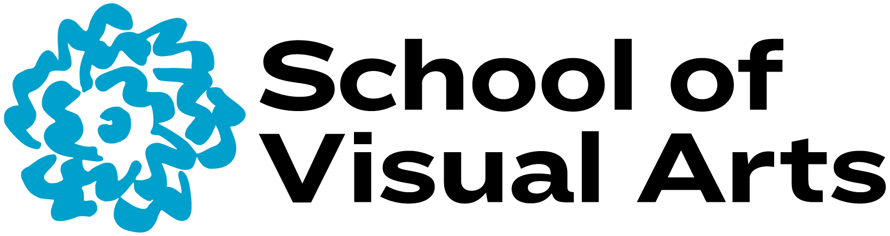
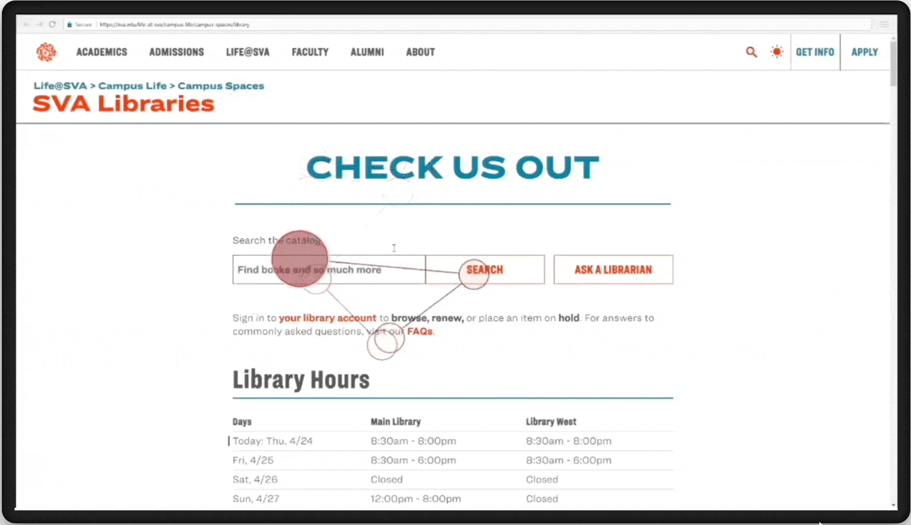
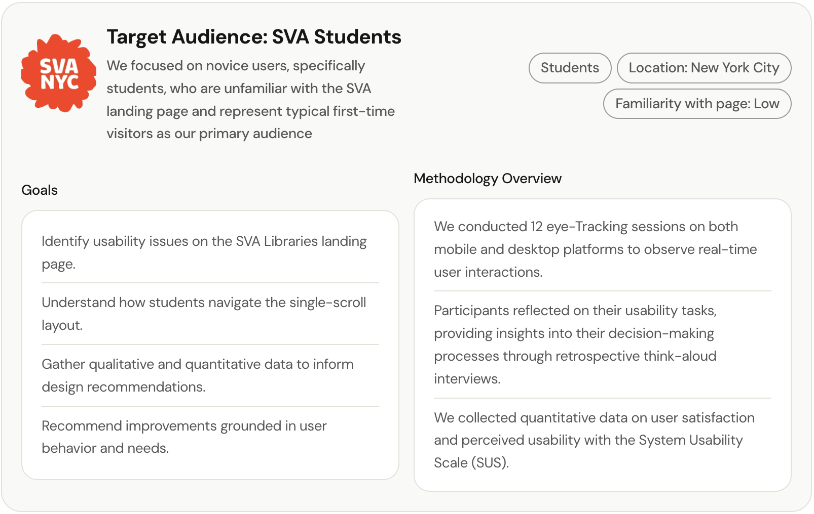
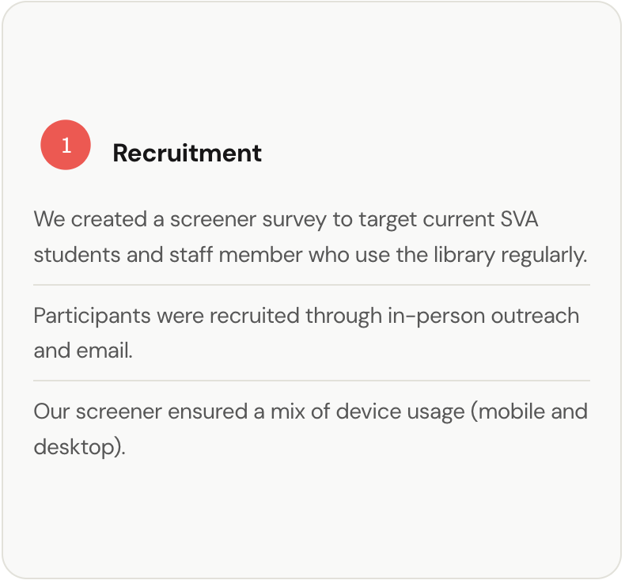
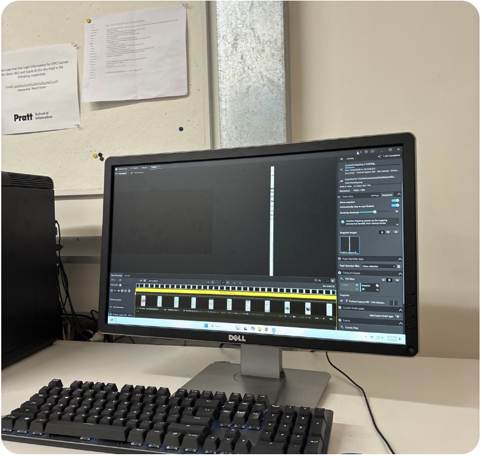
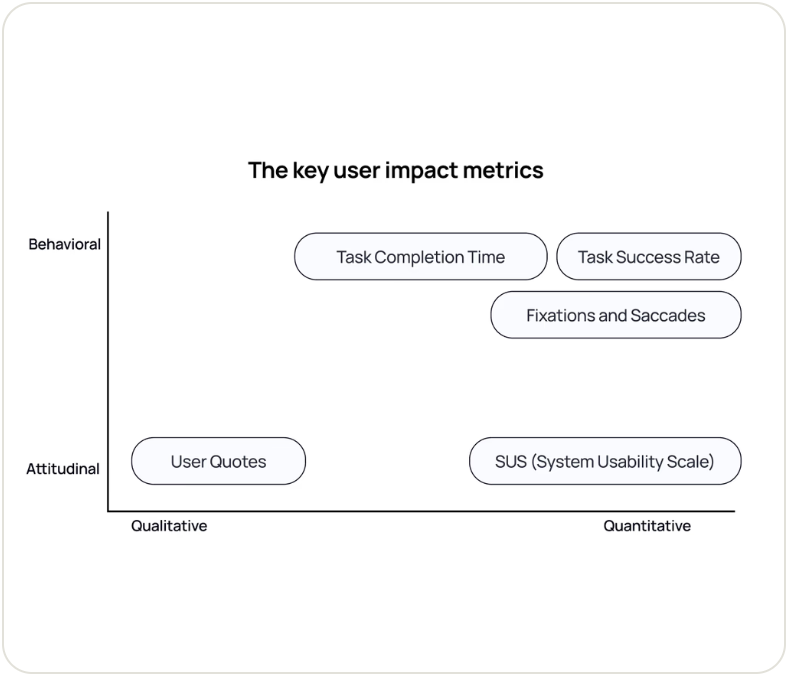
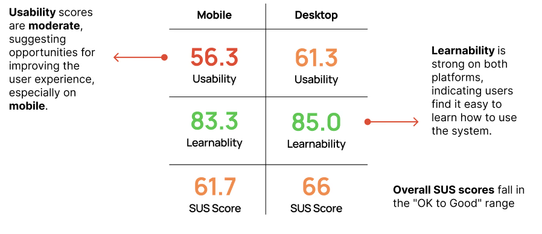
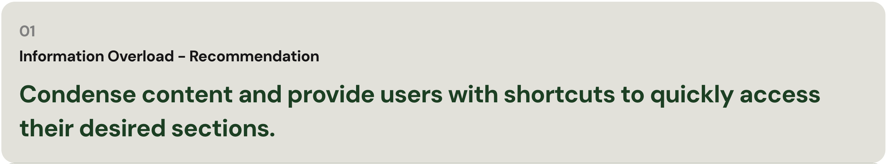
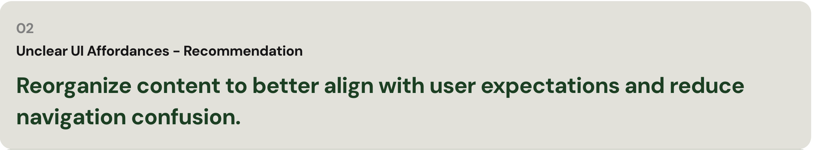
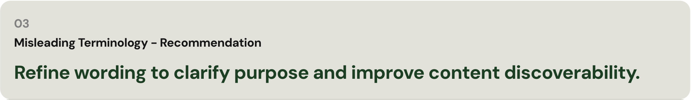

Why don't students scroll?

The SVA Libraries page had all the information students needed. They just weren't finding it.
The School of Visual Art (SVA) Libraries landing page was built to be self-serve for students to find resources, book study rooms, and search the catalog. Instead, students were bypassing it and consulting the front desk. Our team was brought in to find out why.
We ran 12 mobile and desktop eye-tracking studies using Tobii, paired with retrospective think-aloud interviews and the System Usability Scale (SUS). The goal was to understand why students were not using the website as intended.
Students weren't ignoring the site because it lacked content. They were overwhelmed by it.
I usually just ask someone at the front desk… the site is too much
— SVA StudentThe page was long, text-heavy, and structured around how the library was organized not how students looked for things. Terms like "Services" and "Resources" meant different things to staff and students. Key actions like booking a study room were buried. Heatmaps showed steep dropoffs past the mid-section of the site.

Primary users: novice, first-time visitors to the page with no prior knowledge of how the library structured its contentWe designed tasks that mirrored how students actually use the library.
Rather than asking open-ended questions, we built tasks around real scenarios like how to book a study room, find a form, and locate a deadline. If the site was failing students, we needed to recreate the moment of failure.
Recruitment & Study Design
We recruited SVA students with no prior experience using the libraries page. Fresh eyes gave us the clearest signal on first impression usability.

Eye-Tracking Sessions
We conducted 12 sessions across mobile and desktop using Tobii. Participants narrated their thinking aloud while we recorded gaze patterns, fixations, and scroll behavior. A moderator and notetaker worked each session.

Tobii software showing real-time gaze data on the moderator's sideAnalysis
We cross-referenced heatmaps, interview quotes, SUS scores, and a shared issue log to identify patterns. This gave us both the surface behavior (where eyes went) and the underlying frustration (why students gave up).

Methods mapped across qualitative/quantitative and behavioral/attitudinal axesWe identified three patterns across every session.
Mobile users scored consistently lower on the SUS score than desktop users. Low scores aligned with specific moments of failure like clicking non-interactive boxes, semantic confusion between "Services" and "Resources," and visual fatigue from dense text.

SUS scores show mobile users rated usability significantly lower than desktop, despite completing the same tasks01 — Information overload
Users skimmed or skipped important content entirely. The layout rewarded patience, but students didn't have it especially on mobile and on-the-go.
 Gaze plot of users skipping past key content sections, fixations concentrated near the top
Gaze plot of users skipping past key content sections, fixations concentrated near the top
I was just scrolling… it felt like an endless scroll
— Usability participant
02 — Unclear UI structure
Students repeatedly scanned between "Resources" and "Services & Forms" without knowing which held what they needed. Headers didn't match mental models.
 Repeated back-and-forth fixations between two content sections was a clear sign of labeling confusion
Repeated back-and-forth fixations between two content sections was a clear sign of labeling confusion
I would probably call the library and ask, that seems like the easiest option
— Usability participant
03 — Misleading terminology
Unclear labeling such as "Check Us Out" and "…and much more" gave students no indication of what the page was designed for. Most never made it past the Library Staff section.
 Heatmap shows concentrated attention at the top, steep drop-off through mid-section
Heatmap shows concentrated attention at the top, steep drop-off through mid-section

A redesign led with purpose, that cut the scroll in half.
Our recommendations gave the SVA team a clear, evidence backed path forward. We included a purpose statement above the fold, restructured navigation that matched how students thought, and relabeled throughout. Our prototype reduced the total scroll depth by nearly 50%.
 Redesigned landing page with clear purpose section, simplified navigation, and key actions surfaced above the fold
Redesigned landing page with clear purpose section, simplified navigation, and key actions surfaced above the fold
 Before and after of scroll depth cut by ~50% with key actions moved to the top
Before and after of scroll depth cut by ~50% with key actions moved to the top
What I learned
The problem was never the content... it was the structure.
Everything students needed was already on the page. The failure was organizational. Labels, hierarchy, and entry points were built around how the library thought about itself, not how students navigated the site. That gap is where eye-tracking made the invisible visible.
High SUS scores don't guarantee a good experience.
Some students gave us high confidence ratings while describing deep frustration. They completed tasks, so they felt capable but they shouldn't have to work that hard. Completion rate is not the same as usability.
Lab findings need a real-world follow-up.
I designed a follow-up behavioral analytics proposal using Google Analytics 4 and Hotjar to track real scroll depth, click paths, and CTA engagement outside the controlled lab. Lab findings tell you what's broken. Analytics tell you how often it breaks in the real world.